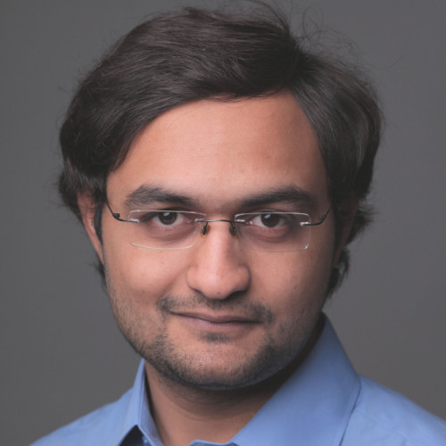

Anurag Sandeep

Summary
I'm a highly professional engineer with variety of skills in CFD and web development
Education
- Master of Science in Mechanical Engineering - Texas A&M University
Work Experience
Airbus
June, 2022 - Present
- Turbulent Combustion for H2 propulsion
- Methodology building for subsonic & supersonic flames
John Zink Hamworthy Combustion
June, 2020 - April, 2022
- Combustion Modeling of Industrial burners
- Reduced order modeling in the context of a digital twin
Skills
- Fluent: ★ ★ ★
- StarCCM: ★ ★ ★
- Python: ★ ★ ★ ★
Journal Publications
- Statistics of Strain Rates in a Turbulent bluff body burner
- Evolution of flame curvature
Other
My Hobbies
Contact Me